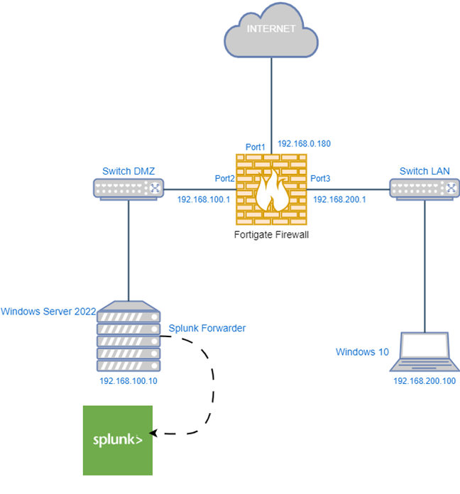
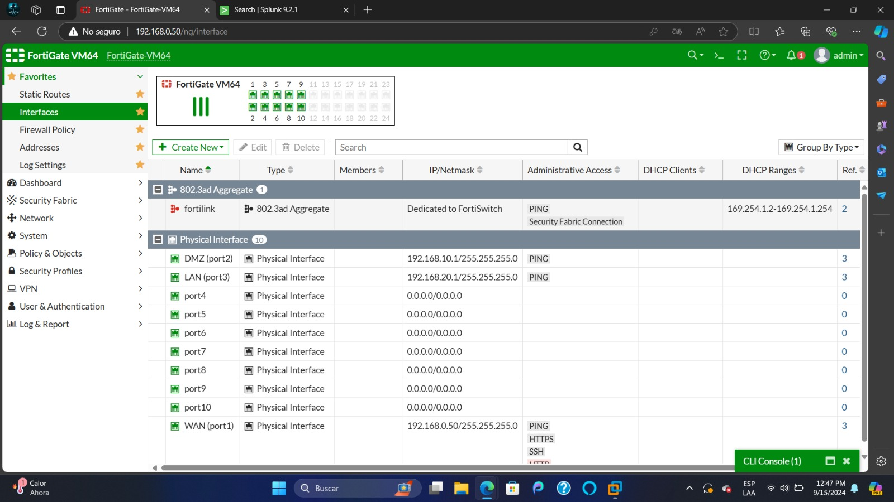
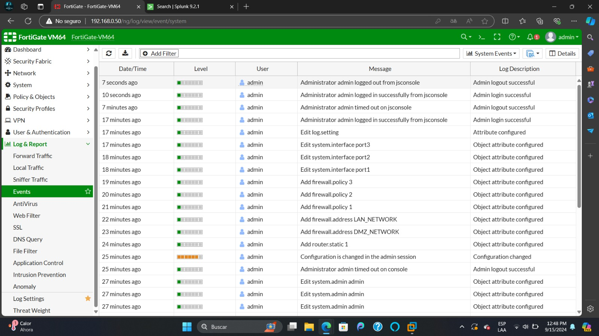
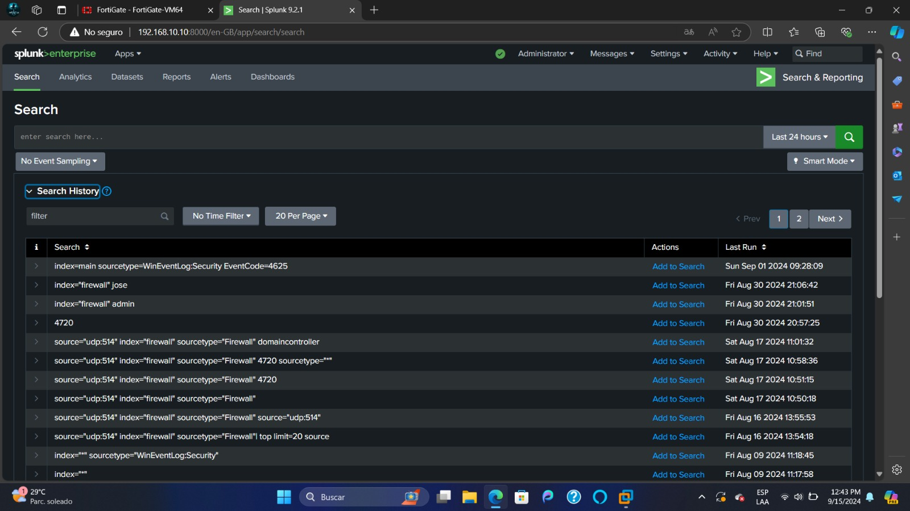
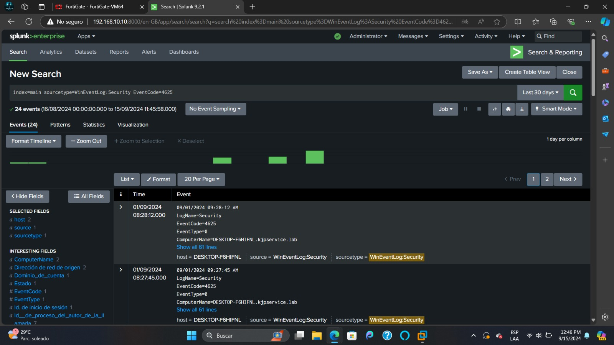

Proyecto de servicos SOC (Centro de Operaciones de Seguridad)
Implementacion de proyecto SOC para el monitoreo de redes informaticas.
Este proyecto tuvo como objetivo poner en práctica los conocimientos adquiridos durante la pre-especialización. Fue desarrollado de forma colaborativa y se centró en el monitoreo del tráfico de logs en los dispositivos finales conectados a la red de una empresa X. Para ello, se emplearon tecnologías innovadoras, como Fortigate (UTM), Splunk (SIEM), configuración de redes en DMZ y LAN, además del uso de máquinas virtuales (Windows Server, Windows 10). También se implementaron herramientas como Sysmon y Splunk Forwarder para optimizar el análisis y la recolección de datos de seguridad.



